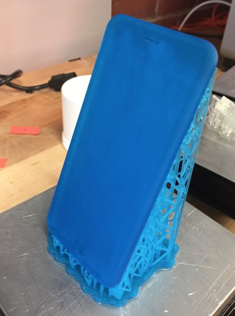
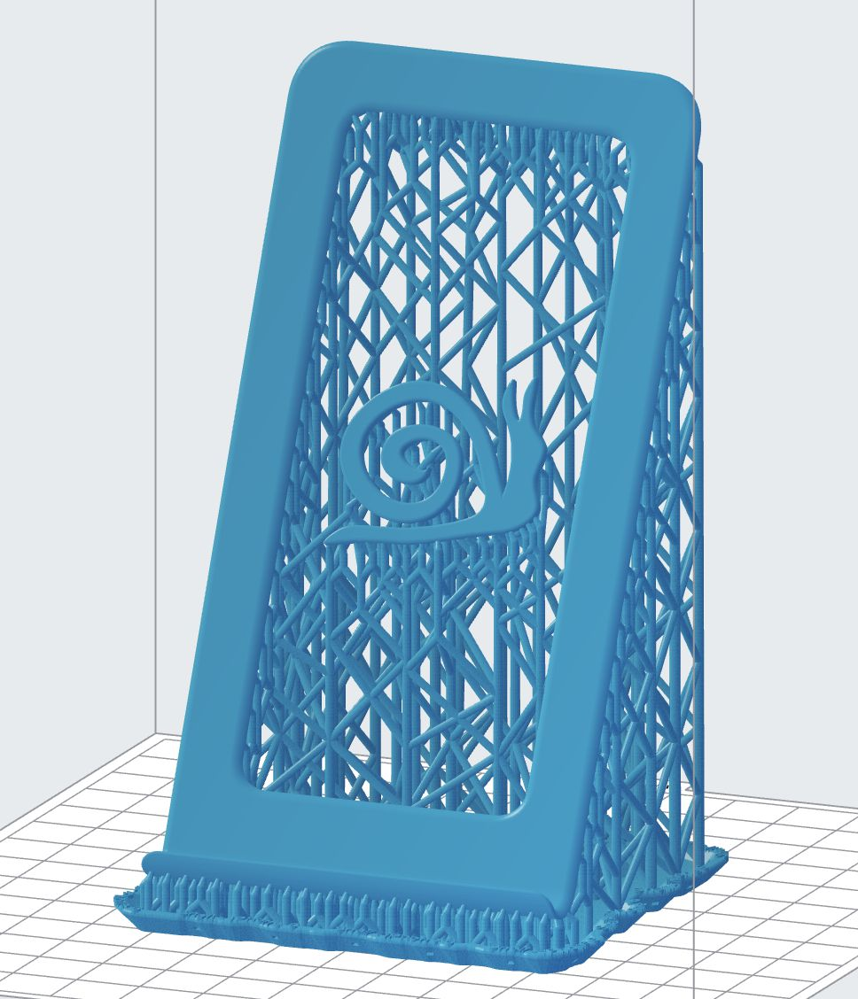
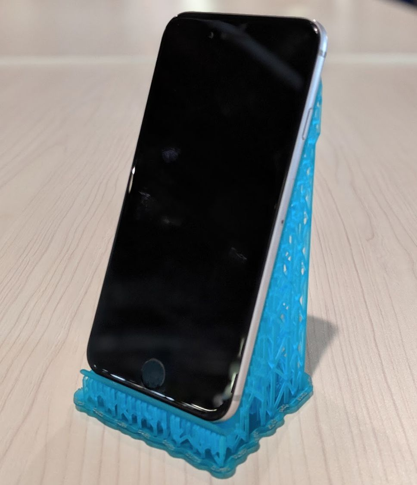
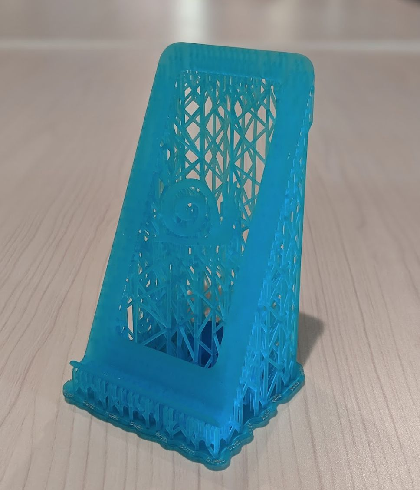
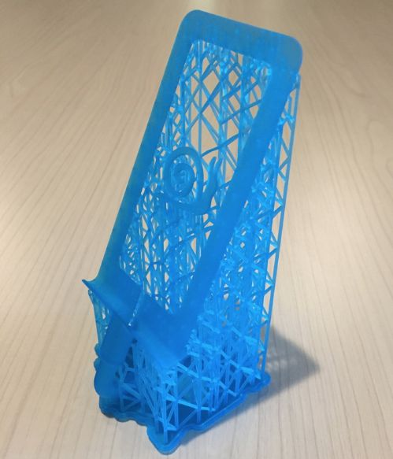
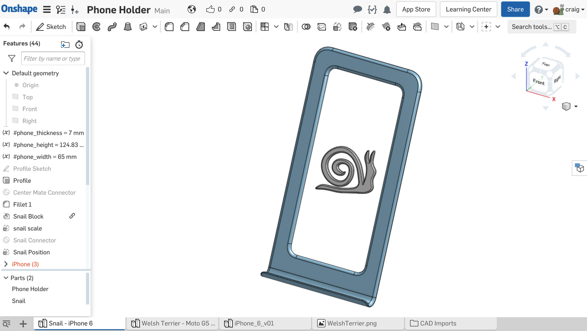
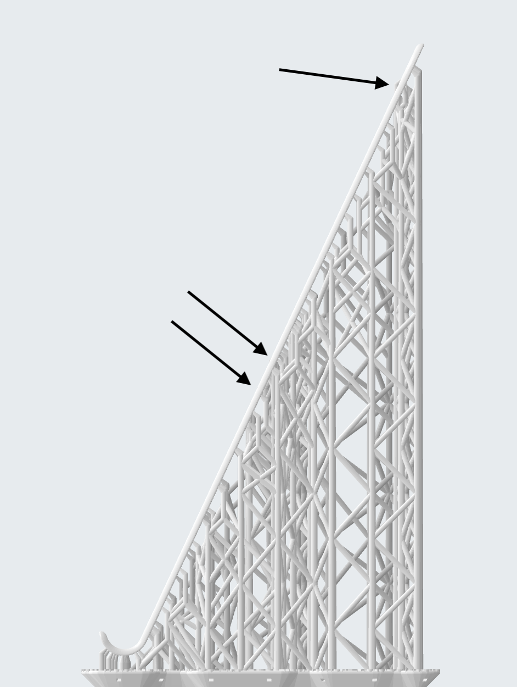
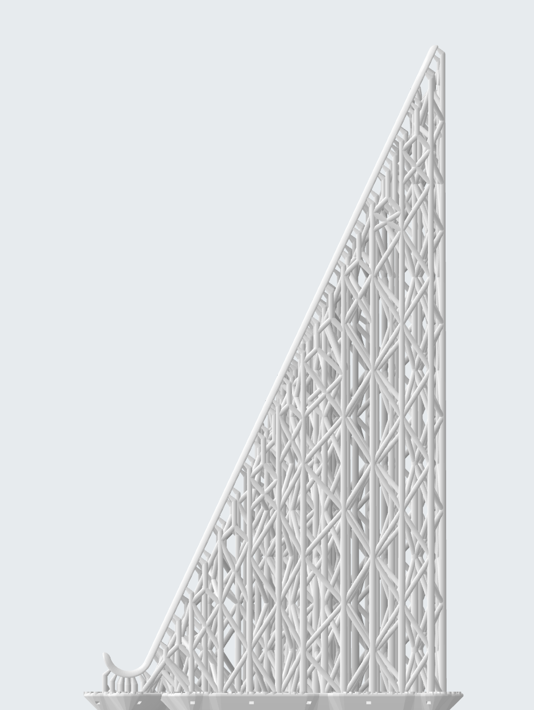
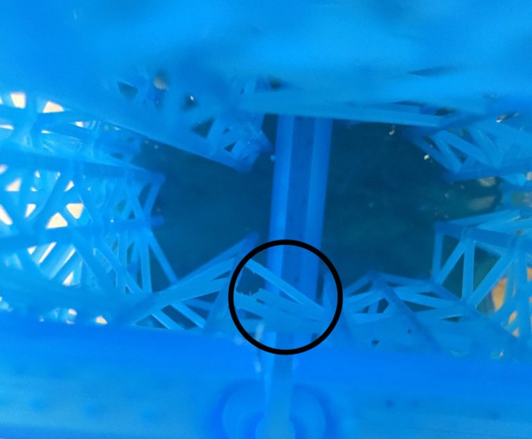

An Exercise in Supports
For a while I have been interested in incorporating auto-generated support structures into the final part geometry for 3D print jobs using PreForm, Formlabs' printer driver software. Over the year, the team at Formlabs has done a decent job reducing the amount of resin spent on generating support structures (especially with the mini rafts introduced earlier this year), but at the end of the day support structures end up as waste.
If all of that sounds like gibberish to you, allow me to explain. Many parts that are 3D printed are not self-supporting, and they require additional scaffolding (known as support structures) to be printed along with the part. The support structures cradle the part and ensure that the geometry can be formed as expected. Once the print is done, the part is removed from the supports, and the supports are discarded.

A few weeks ago, a coworker asked if I could help her print a phone holder for her desk. I got to thinking that it would be awesome to have a phone holder that was entirely made of support structures, each touch tip cradling the phone. So I printed an iPhone 6 model, angled 25 degrees from vertical. The idea was that I would remove the model, post-cure the support, and then be able to put my phone where the model was. Immediately I ran into the issue that the model was fairly robust but the support structures were easy to break and remove. Any attempt to remove the supports resulted in their destruction. I also realized that the small support structures could scratch the phone body. So I abandoned this idea.
Next I designed a thin part that cradles the back perimeter of the phone as well as the bottom edge. To add some fun to it, I put a snail sketch in the middle of the part that is also held up by support structures. Once imported into PreForm, I didn’t adjust the orientation at all because ultimately the support raft will become the base of the part.
The first version came out great, printed in tough (V5) with 100µm thick layers.



Another coworker suggested that I design it to allow for a charging cable. Because I have a relatively old iPhone 6, it loses power quickly, and I found myself often putting the phone in the holder horizontally with the cable sticking out the side. This was silly, so I added a feature to hold a cable in place. It resulted in a much taller part, but it’s essentially the same.

What do you think? Have you made any parts that incorporated PreForm-generated support structures into the part design?
Do-It-Yourself
I’ve recently been using Onshape quite a bit, and I modeled this part in Onshape. The CAD design is public, and you can find the document at this link. With a free Onshape account, you can copy the document into your account. Configurations (well, Part Studios) already exist for the iPhone 6 with snail and cable routing (specifically for Amazon Basics lightning cable) and for the Moto G5 Plus with Welsh Terrier.

Changing the variables #phone_thickness, #phone_height, and #phone_width should rebuild the model to the right size for your phone. Note that the height I used for the iPhone 6 is actually a bit shorter than the phone in order to avoid the protruding camera lens. To change the animal, simply edit the “Terrier Sketch” or “Snail Sketch”*, use the “Insert Image” command, position the image to where you want it, and trace the image with the “Spline” command. Make sure that the spline you sketch is closed and that you delete the sketch entities from the snail/terrier for error-free feature rebuild.
Setting up in PreForm is pretty easy. I printed the part using Tough and Color Kit, but I think most resins should be fine. I turned up the touch tip size by about 0.1mm (we don’t want the supports coming off here). This part was printed on the Form 2, but for Form 3 I would increased touch tip size by at least 0.2mm. I also increased density to 1.20 and slope multiplier to 1.50 for extra supports. Lastly I viewed the supports from the side and eliminated any support structures that generated inside the region where the phone would sit. In the images below, the "before" is on the left, with support structures breaking the phone plane. On the right is the "after" when I eliminated the touch tips that contributed to the plane break.


Export the parts together by right clicking the Part Studio and clicking "Export..." using the STL option. Print the part, wash the part, cure the part.
If you used the model with cable routing, you may need to snip away a few support trusses in order to weave the cable into place. Other than that, it should be good to use.

*the snail shape was actually derived from a Solidworks Block body that I inserted, so the feature tree for the Snail - iPhone 6 Part Studio is a bit convoluted.